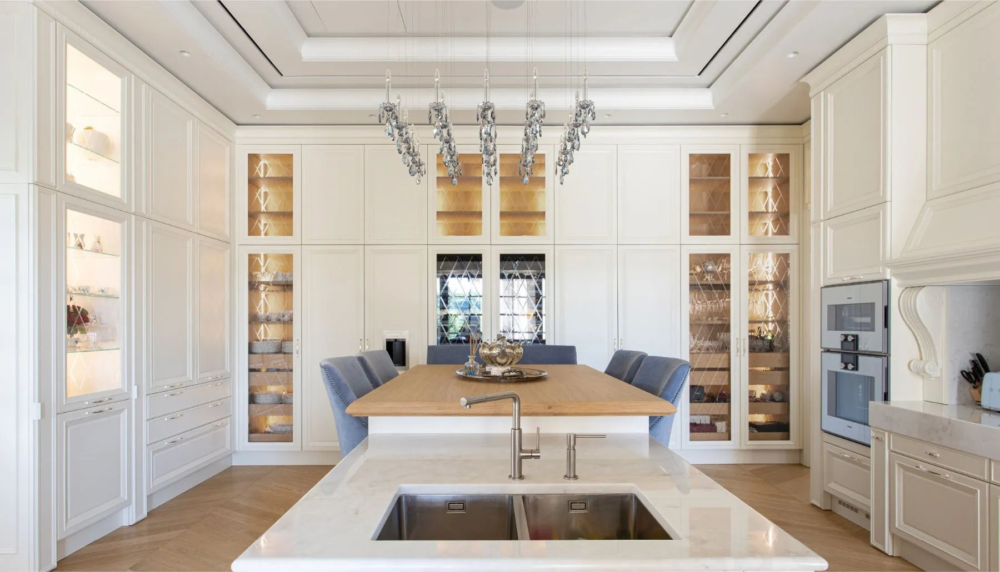
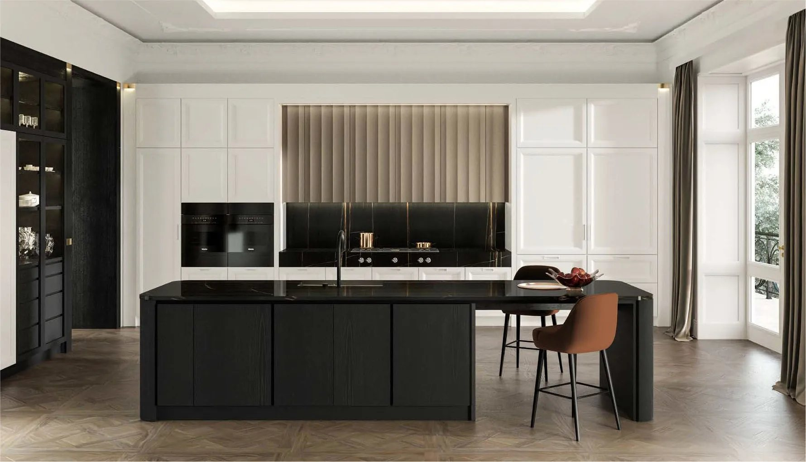
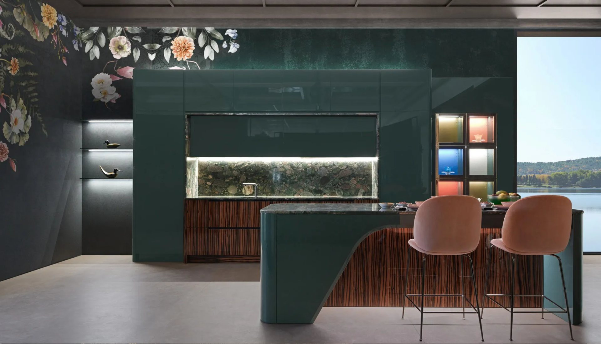
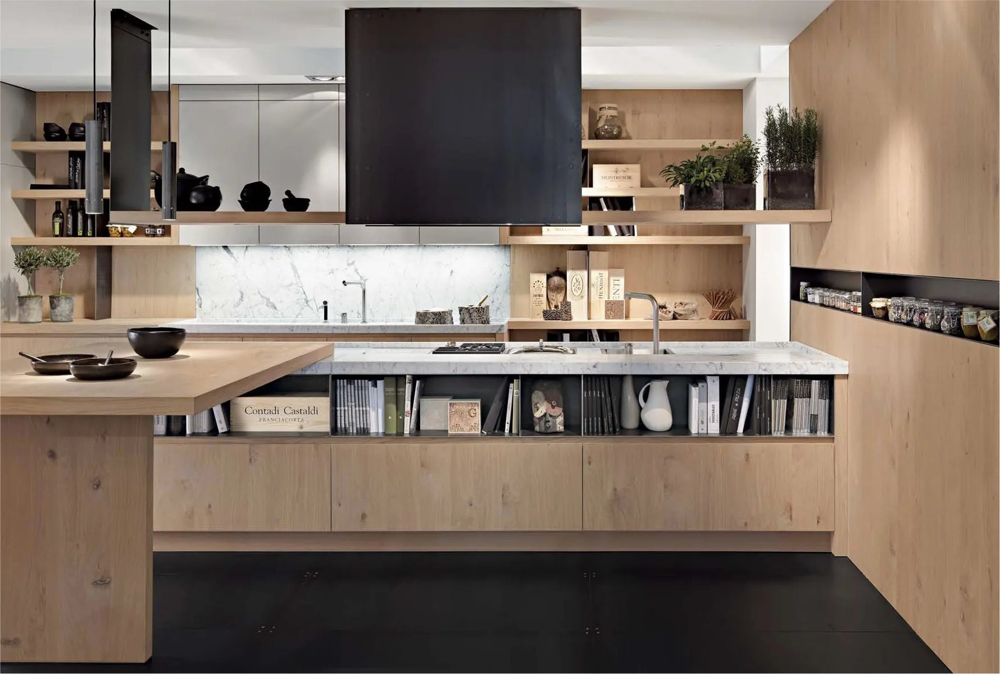

Коллекции
Кухни Castagna Cucine
Итальянские кухни на заказ. В коллекциях Castagna Cucine — классические рамочные фасады, рельефное дерево и сочетания камня, лака и металла.

Roma
Итальянская классическая кухня с рамочными фасадами, витринами и островом.

Gallery
Кухня с рамочными фасадами, выразительным камнем и несколькими вариантами отделки.

Sixties
Коллекция с округлым островом, глянцевым лаком и отделками в духе итальянского дизайна 1960-х.

Natura
Кухня с выразительной фактурой дуба, мраморной рабочей поверхностью и металлическими деталями.
Обсудить проект кухни
Подберём конфигурацию и отделки для Вашего проекта.